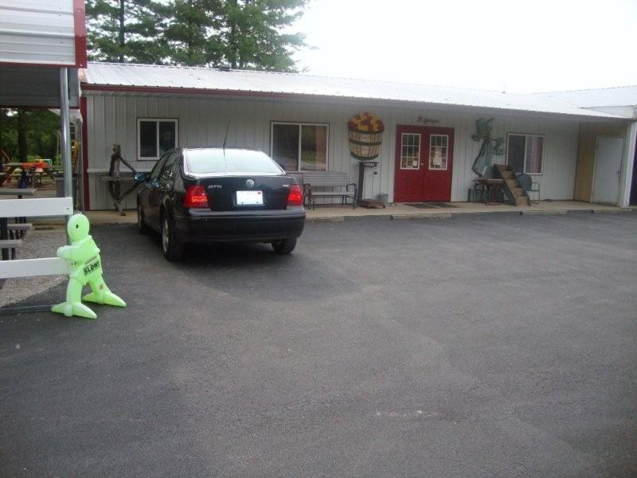
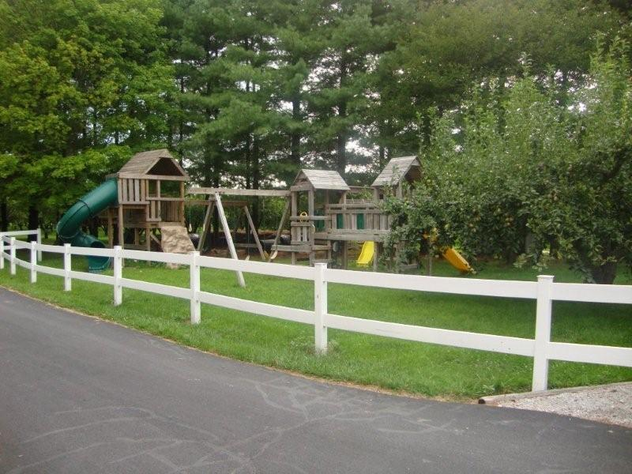

We are now open with apples
and peaches.
Please call first or check Facebook for availability of peaches as supplies are limited.
Welcome to Okaw Valley Orchard…a family run orchard in Sullivan, Illinois, just off the beaten path. Whether you are looking for fresh from the farm fruit and apple cider, or a quiet place to get away from the hustle and bustle of everyday life, we are happy to welcome you to Okaw Valley Orchard!
We are a 3 generation, family run, working orchard who desires to share our simple orchard life. Our 1500 apple trees grow 27 different varieties of apples, peaches, plums, and pears. Come and eat in our covered picnic area, play in our playground, browse through our Country Store full of in-season Illinois fruit, fresh apple cider, honey, jellies, gifts, apple cider donuts, and other fresh baked goodies. We also have a u-pick area, dependent on what is seasonally available. Okaw Valley Orchard is a fun, family friendly place that’s become a tradition for many. Come visit today!